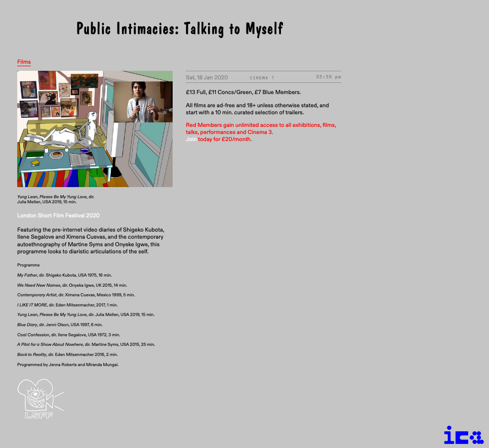
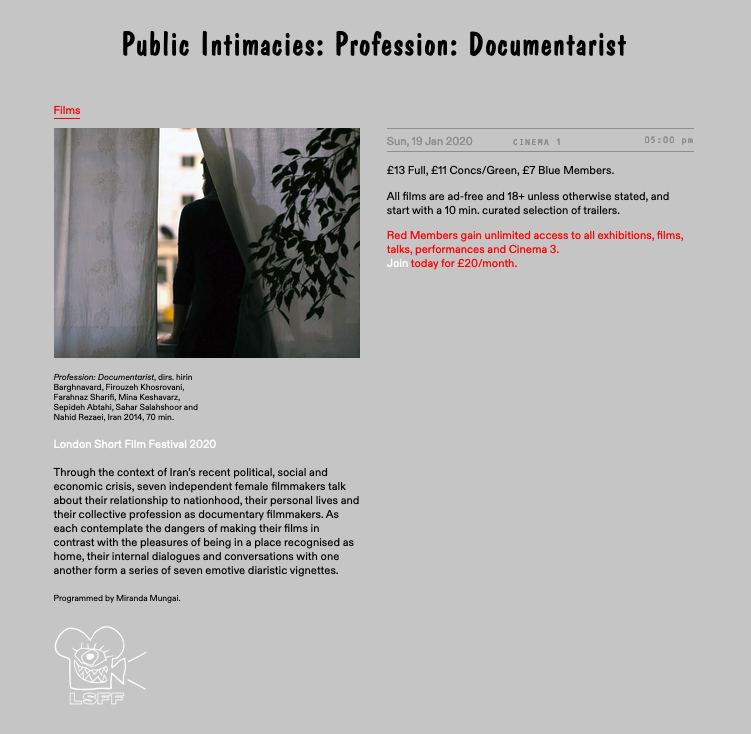

Public Intimacies was a collaboratively curated special events programme hosted at the Institute of Contemporary Arts (ICA) in London for the closing weekend of the London Short Film Festival 2020.
The programme was an investigation into women's auto-ethnographic practices, focusing on the video diary form. I conceptualised, researched and produced the events with Jenna Roberts.
The three-day programme featured:
With Warmth and Ecstatic Solidarity was a virtual special events programme of short documentaries presented at the London Short Film Festival 2021.
The programme looked at filmmaking from various diasporas and the potential for international solidarity. I moderated a conversation with filmmakers Bircan Birol and Suneil Sanzgiri after the event.

